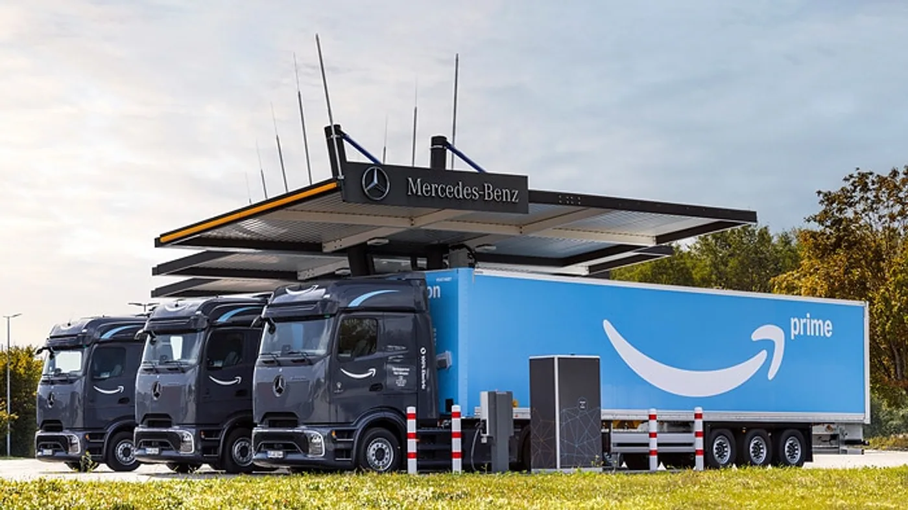

Mercedes-Benz Trucks informó el 9 de septiembre de 2026 la entrega de los primeros 27 eActros 600 a Amazon en Alemania. La previsión comunicada es superar las 50 unidades del mismo tipo en ese país antes de finalizar 2026.
La operación se vincula con un pedido de más de 200 camiones eléctricos firmado a comienzos de 2025. El fabricante distingue esta entrega alemana de las iniciadas en el Reino Unido a fines de ese año. Los vehículos se destinan a recorridos de transporte entre centros de distribución y áreas urbanas, conocidos como middle mile.
Amazon también está instalando cientos de cargadores para vehículos pesados en sus centros europeos. La noticia no describe reparto domiciliario con estos camiones ni anuncia una incorporación argentina. La previsión de fin de año debe distinguirse de las unidades efectivamente entregadas.
La parte del viaje que el destinatario no ve
Análisis de Zabala Repuestos. Cuando una persona recibe un paquete, suele identificar el vehículo de la última entrega. Antes existieron otros movimientos que conectaron instalaciones. Mirar esa etapa ayuda a entender por qué una transformación logística no depende únicamente del reparto urbano.
Para analizar un servicio entre centros, conviene dibujar la secuencia completa: disponibilidad de la carga, preparación, salida, recepción y retorno. Un cambio de vehículo debe integrarse a esa cadena. La pregunta no es solo si puede hacer el trayecto, sino cómo encaja con las demás actividades.
La recepción también necesita estar preparada
Un centro puede conocer la hora prevista de llegada y, aun así, necesitar ajustes para atender una configuración nueva. La flota debería revisar accesos, estacionamiento y coordinación de tareas con quienes reciben el vehículo. Esa conversación evita que cada conductor tenga que resolver por su cuenta una situación repetida.
También interesa definir qué sucede ante una demora. Si cambia la secuencia prevista, operaciones necesita saber qué actividades pueden reorganizarse y qué compromisos deben comunicarse. Disponer de un procedimiento claro ayuda a que la tecnología se integre a un servicio confiable.

Incorporar varias unidades exige repartir responsabilidades
Una entrega de flota abre tareas que van más allá de asignar camiones a conductores. Conviene establecer responsables para formación, seguimiento técnico y coordinación del abastecimiento energético. Cada persona debería conocer qué información necesita recibir y qué decisiones le corresponden.
La capacitación puede organizarse por función. Quien conduce necesita comprender su rutina; quien planifica, las condiciones del servicio; y quien atiende la unidad, los procedimientos de su especialidad. Compartir una base común evita que las áreas trabajen con supuestos diferentes.
Medir la transición sin mezclar causas
Durante una incorporación, resulta útil separar incidencias del vehículo, de la infraestructura y de la operación. Si todo se registra bajo una categoría general, después será difícil reconocer qué debe mejorarse. Un historial claro permite conversar con cada responsable sobre el problema correcto.
La comparación con el servicio anterior también necesita criterios estables. Viajes cumplidos, puntualidad y disponibilidad pueden observarse junto con las condiciones en que se trabajó. La intención no es buscar una cifra favorable, sino entender qué cambió y qué requiere atención.
Qué puede aprovechar una empresa argentina de este caso
La escala de Amazon no es una receta para cualquier transportista. Sin embargo, el caso invita a pensar el vehículo y sus instalaciones como partes de una misma operación. Una empresa más pequeña puede aplicar esa lógica al describir un circuito y preparar una prueba limitada.
Antes de trasladar la experiencia, necesita confirmar qué producto y respaldo están disponibles localmente. También conviene revisar las condiciones de su cliente y la posibilidad de coordinar instalaciones. Un acuerdo claro sobre el servicio resulta más útil que copiar objetivos anunciados para otra red.
La entrega alemana ofrece un hecho concreto para seguir la electrificación del transporte pesado. Los próximos resultados operativos serán los que permitan evaluar la evolución de esa incorporación. Mientras tanto, conviene mantener separadas las unidades entregadas, las previstas y las condiciones particulares en que trabajarán.